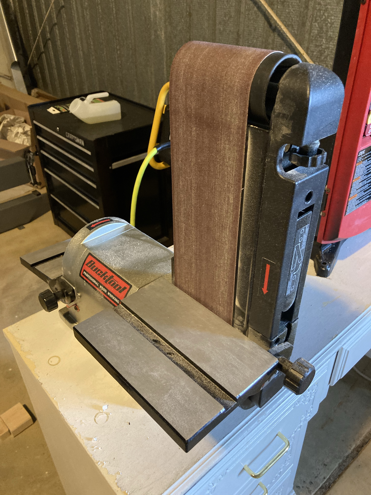
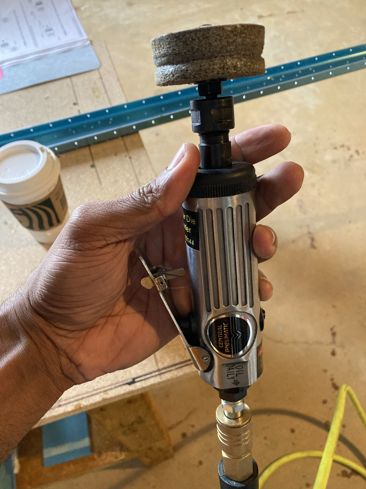
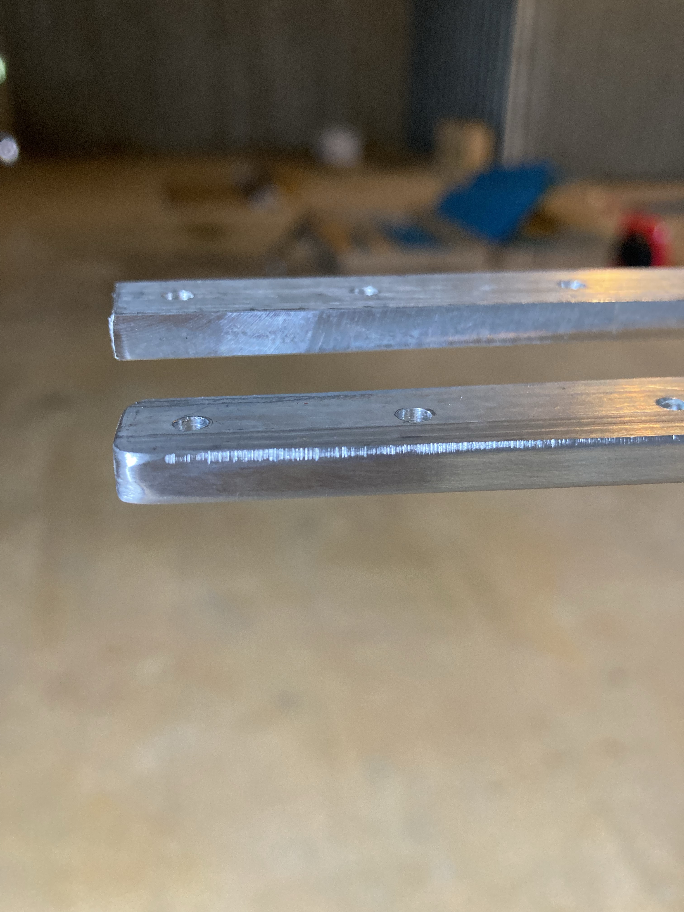
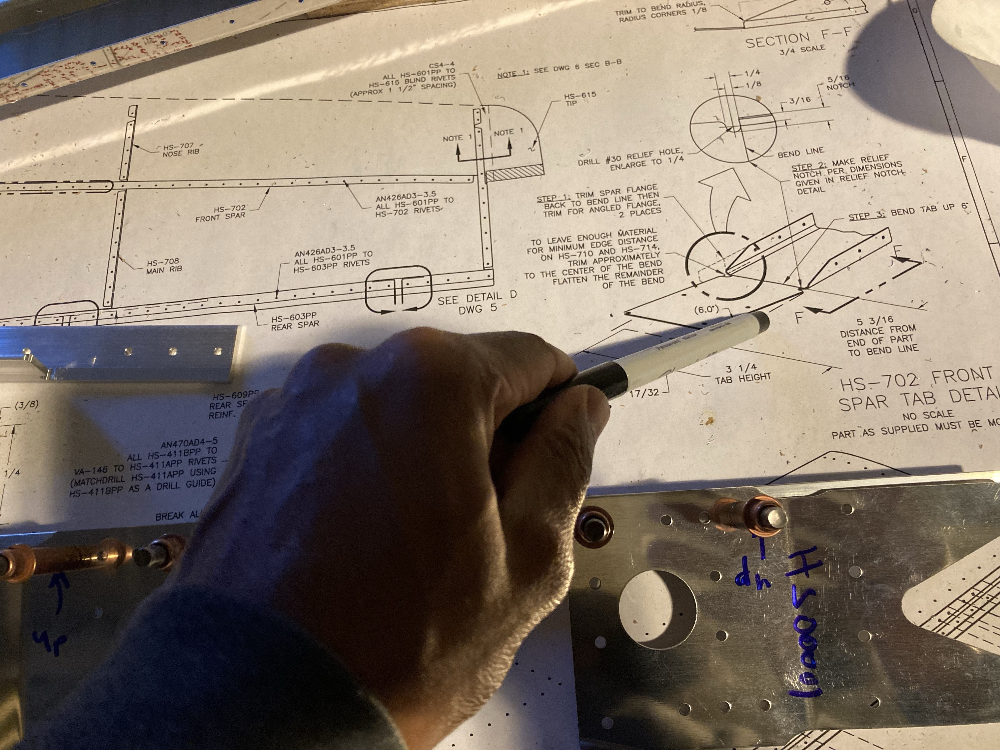
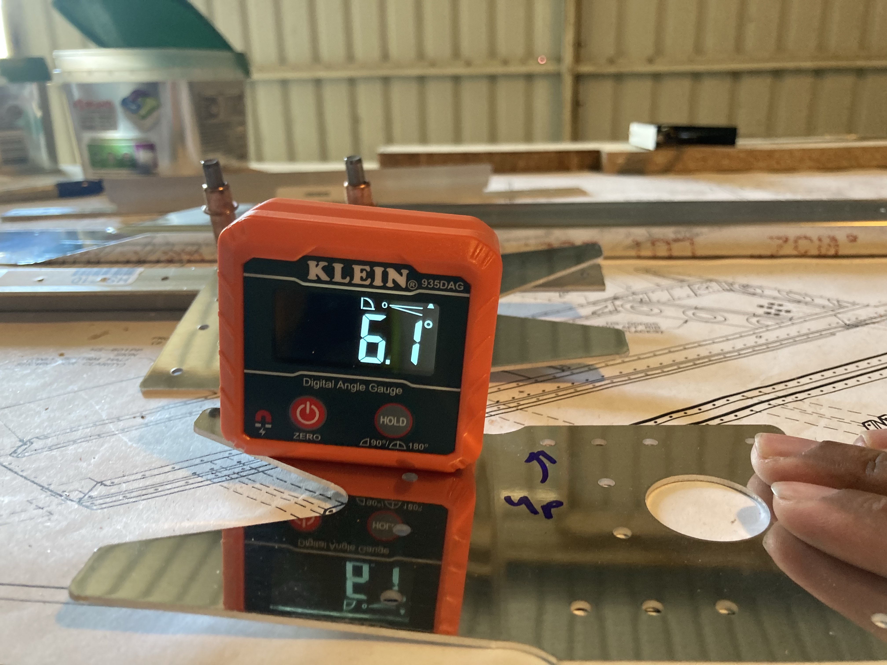
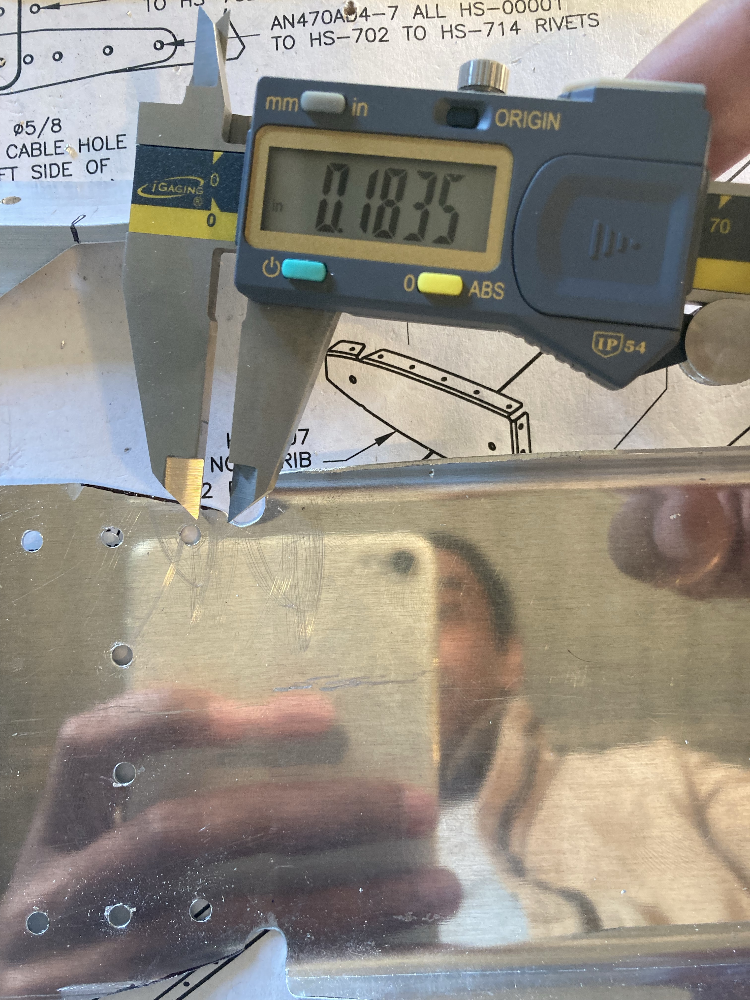
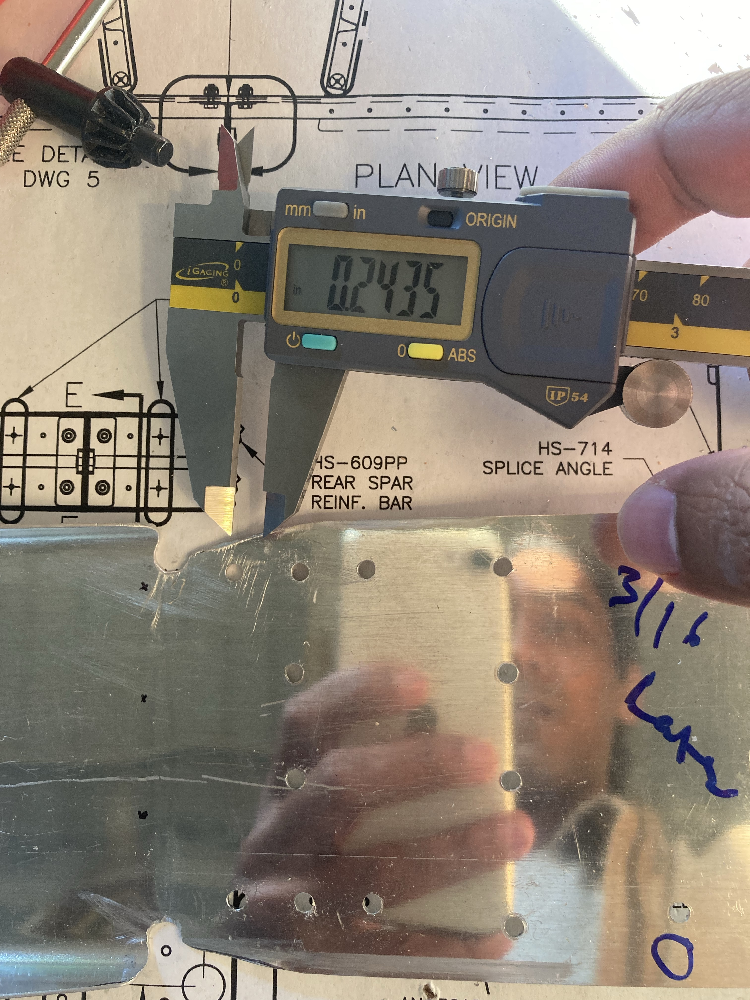
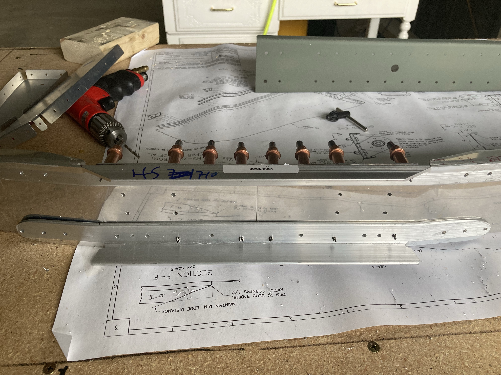

Included work from October 2021 to 4th November 2021.
The plans call for starting with the horizontal stabilizer and in particular the rear spar assembly. At first everything was a bit overwhelming looking at different diagrams, physical parts, and the instructions — but my interest and the experience gained from the practice kit helped me overcome.
I have made a decision to keep going with the work even if I have doubts and I mess up parts. In that case, I will just order new parts. This will help me overcome fear and not waste much time. Also, the year 2021 and social media is a blessing. I have fellow builders connected on different platforms who share their experiences and wisdom.
Rear Spar Assembly
I started with the rear spar assembly, which was quite easy. Connected the spar reinforcement, smoothed them out with a bench belt sander and then with a 3M wheel. The wheel in the drill press was much better than in hand with a high RPM air die grinder.

Initial smoothing of the spar reinforcement.


Initial smoothing of the spar reinforcement. Later I smoothed it more and primed it.

Rear spar assembly and double-checking those unusual holes like the #21.





The front spar of the horizontal stabilizer was tricky to understand first.

Rear spar assembly and double-checking those unusual holes like the #21.
Front Spar
The front spar of the horizontal stabilizer was tricky to understand at first. There is too much going on and aligning everything within tolerance is something to be careful about. Pay attention here — there are many things happening simultaneously.